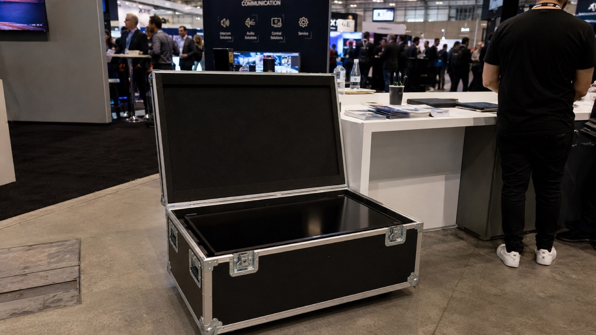

Besluiten na 11 september
Per aantekening een voorstel, een voorbeeld en een paar keuzes. Kies wat je wilt, zet er eventueel een opmerking bij, en klik onderaan op Toon mijn keuzes: dan krijg je een tekst om door te sturen. De nummers zijn die van de lijst in de chat. Je keuzes blijven in deze browser staan.
De drie tegels op de homepage
tekst · snelUit de meeting: “Ik weet het nog niet” is geen goede zin bij de drie tegels om te kiezen. En: “Drie manieren om bij de juiste case te komen” — tekst duidelijker, mensen willen niet lezen.
Tegel C krijgt een echt beginpunt in plaats van een niet-antwoord, en de tegels worden korter. Het voorbeeld verandert mee met wat je kiest.
Ik weet wat ik nodig heb
Model en maten zijn bekend. Direct de configurator in, prijs meteen in beeld, klaar in vijf stappen.
Naar de configurator →Ik weet wat ik moet beschermen
Een Les Paul, een 19-inch rack van 6 HE, een moving head. Zeg wat erin gaat, wij bepalen de maten.
Wat ga je vervoeren? →Ik weet het nog niet
Koffer, hoedcase, trunccase of rackcase — wat is het verschil, en wat past bij jouw transport?
Vergelijk de vijf modellen →De USP’s in de hero
tekst · snelUit de meeting: “Bouwpakket of kant-en-klaar” mag eruit; volgorde 1 snelste, 2 controle, 3 ervaring, 4 prijs.
Meer transparantie over de prijs
ontwerp · prijzen van cbUit de meeting: transparantie over de prijs mist een beetje — waar verwerken we een prijsindicatie? De prijsopbouw op de homepage blijft staan waar hij staat.
Meer dan één mag. De prijs zit dan op de plek waar iemand kiest, niet in een aparte sectie.

Koffer

Rack voor een Midas M32
€ 412
Koffer voor een drone
€ 239
Standkist voor een beurs
€ 529De configurator laten zien
ontwerpUit de meeting: de configurator laat nu overtuigend zien dat CB dit kan — kunnen we daar iets mee?
Een strook “Probeer het”: de draaiende kist met drie schuiven en een prijs die meeloopt. Eén klik opent de configurator met die maten. Het laat zien wat CB kan, en is meteen prijstransparantie. Probeer het voorbeeld.
Personalisatie
later · bouwUit de meeting: wie naar een gitaarcase zoekt, kunnen we die dynamisch andere dingen laten zien?
Beginnen met een simpele regel, geen personalisatiesysteem: de laatst bekeken categorie onthouden (alleen met cookietoestemming) en die terug laten komen.
De tekst op “Case aanvragen”
tekst · snelUit de meeting: case aanvragen moet een alternatieve CTA-tekst krijgen.
de snelste van Nederland
Het budgetveld in het offerteformulier
snelUit de meeting: budget uit het offerteformulier halen. Het stond erin omdat Joran zonder bedrag een case kan tekenen die drie keer te duur is. Zonder veld kan hij dat in zijn antwoord vragen.
“Dit bouwden we eerder” op de offertepagina
ontwerp · input van cbUit de meeting: op de offertepagina laten zien welke cases we kunnen maken, en de prijs.
Drie of vier echte cases met maat, wat erin zit, prijs en foto. Namen, maten en prijzen hieronder zijn verzonnen.
Rack voor een Midas M32
820 × 610 × 420 mm · 4 wielen
€ 412Koffer voor een inspectiedrone
640 × 480 × 260 mm · plukschuim
€ 239Standkist voor een beurs
1.200 × 600 × 600 mm · 2 vakken
€ 529Waar het zoekveld op /case-voor naartoe leidt
ontwerpUit de meeting: de zoekbalk op case-voor kan naar de shop, maar ook naar een branche- of SEO-pagina gaan.
De suggesties per soort gegroepeerd. De uitweg onderaan blijft.
De zoekbalk bovenin: ook de categorie klikbaar
ontwerpUit de meeting: zoekbalk ook productdetail en subcategorie, maar ook de categorie zoals backline klikbaar maken.
Drie niveaus in één lijst, elk met een eigen bestemming. Op case-voor-v3 werkt dat al voor categorieën.
/flightcases: de vijf modellen tegelijk
ontwerp · renders van cbUit de meeting: render van één model; de vijf modellen tegelijk zichtbaar, draaiend; klikken vergroot de case.
Vijf kleine modellen naast elkaar; klikken maakt er de grote van, met maten en “Configureer dit model”. Nu met foto’s of de draaiende kist, later echte renders als de configurator ze kan maken. Klik in het voorbeeld.
Koffer
Draagbare transportkoffer · vanaf € 149
Configureer dit model →Het Flightcases-megamenu, met beeld
ontwerpUit de meeting: megamenu Flightcases: wat moet daar in? En kan er een render van een case in?
De modellen worden de hoofdkolom, elk met een klein beeld. De toepassingen blijven als tekstkolom, rechts zelf configureren. Het beeld is een vaste afbeelding, geen draaiende kist: een menu moet meteen openen.
// WAAR GEBRUIK JE HEM VOOR
- AV & licht
- Backline & muziek
- Broadcast & camera
- Medisch & lab
- Industrie & meettechniek
- Evenement & beursbouw
// MODELLEN


Jouw maten invullen en de prijs zien terwijl je typt.
Hulp en offerte vanuit de configurator
ontwerp · vraag aan cbUit de meeting: in de editor wil ik “case-hulp” kunnen zeggen en dan een offerte-element zien met de case-ID erin, waar de gebruiker iets aan toevoegt. L1 kan dat niet, L2 en L3 wel.
Een knop “Hulp nodig bij deze case?” in de voet van de configurator. Die opent een vak met de case-ID en een samenvatting al ingevuld, een tekstveld en een upload. Het gaat als aanvraag naar een casebouwer. Bij L1 een link naar case aanvragen met het product erin. Klik in het voorbeeld.
Eén case in twee maten
ontwerp · parameters van cbUit de meeting: 80×80×80 en 100×60×60 allebei op het productoverzicht, twee aparte productpagina’s. Op de productpagina kun je de maat nog veranderen als het L2 is, bij L1 niet. CB levert per categorie of het L1, L2 of L3 is.
Elke maat is een eigen product in Medusa, met een eigen pagina. Op de productpagina staan de andere maten als knoppen. Is de categorie L2, dan staan daaronder ook de maatvelden: de configurator in beperkte stand, met een prijs die meeloopt. Uitgewerkt in de productpagina-mockup, L1 en L2 →

Trunccase 80×80×80
€ 290,40